13. SQL Server 2014
Wir werden nun die Portierung der mit MySQL durchgeführten Schritte auf SQL Server 2014 besprechen.
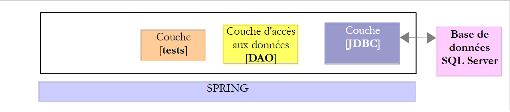 |
13.1. Einrichten der Arbeitsumgebung
13.1.1. Eclipse-Umgebung
Wir werden mit der folgenden Eclipse-Umgebung arbeiten:
 |
Die oben aufgeführten SQL Server-Projekte befinden sich im Ordner [<examples>/spring-database-config\sqlserver\eclipse].
Hinweis: Drücken Sie [Alt-F5], um alle Maven-Projekte neu zu generieren.
13.1.2. Erstellen der Datenbanken
Wie bereits bei Oracle und DB2 müssen wir den SQL Server JDBC-Treiber im lokalen Maven-Repository installieren.
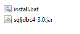 |
Die Datei [install.bat] enthält den folgenden Code:
"%M2_HOME%\bin\mvn.bat" install:install-file -Dfile=sqljdbc4-3.0.jar -Dpackaging=jar -DgroupId=com.microsoft.sqlserver -DartifactId=sqljdbc4 -Dversion=4.0
wobei [%M2-HOME%] das Maven-Installationsverzeichnis ist (siehe Abschnitt 23.2, Seite 466). Nach dieser Installation kann der SQL Server JDBC-Treiber in den [pom.xml]-Dateien über die folgende Abhängigkeit referenziert werden:
<dependency>
<groupId>com.microsoft.sqlserver</groupId>
<artifactId>sqljdbc4</artifactId>
<version>4.0</version>
</dependency>
Im weiteren Verlauf dieses Leitfadens werden Verbindungen zu SQL Server-Datenbanken unter Verwendung der Anmeldedaten [sa / msde] hergestellt. Starten Sie SQL Server und dessen Client [MsManager] (siehe Abschnitt 23.9).
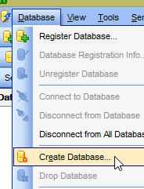 |  |
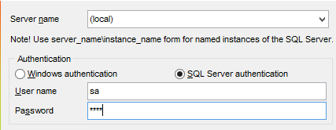 | 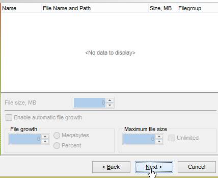 |
 | 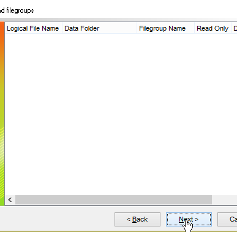 |
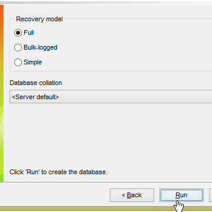 |  |
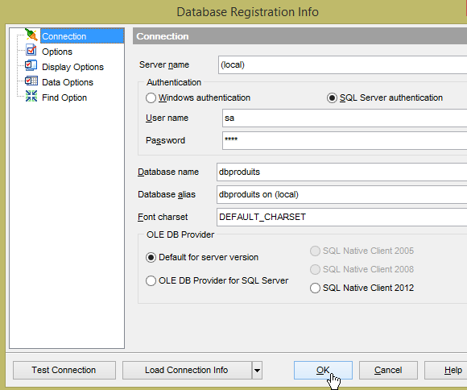 | 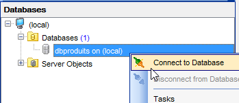 |
 |
- Laden Sie in [1] das SQL-Skript [<examples>\spring-database-config\sqlserver\databases\dbproduits.sql];
 |  |
 |
- In [2] war es nicht möglich, dieselbe [PRODUCTS]-Tabelle für die Projekte [spring-jdbc-01 bis 03] zu verwenden. Der Grund dafür ist:
- die Projekte [spring-jdbc-01 und 02] Zeilen mit ihren Primärschlüsseln einfügen;
- das Projekt [spring-jdbc-03] fügt Zeilen ohne Primärschlüssel ein und erwartet, dass das DBMS diese generiert. Damit dies funktioniert, muss der Primärschlüssel [ID] vom Typ [Identity] sein. Dieser Typ unterstützt in SQL Server jedoch nur die automatische Generierung von Primärschlüsseln und erlaubt nicht das Einfügen einer Zeile mit einem benutzerdefinierten Primärschlüssel. Es wird dann ein Fehler gemeldet, und ich konnte keine Lösung dafür finden. Die Projekte [spring-jdbc-01 und 02] verwenden die Tabelle [PRODUCTS] ohne automatische Primärschlüsselgenerierung. Das Projekt [spring-jdbc-03] verwendet die Tabelle [PRODUCTS2] mit automatischer Primärschlüsselgenerierung.
Führen Sie nun die Konfigurationen aus:
- [spring-jdbc-generic-01.IntroJdbc01];
- [spring-jdbc-generic-01.IntroJdbc02];
- [spring-jdbc-generic-03.JUnitTestDao1];
- [spring-jdbc-generic-03.JUnitTestDao2];
Sie sollten alle erfolgreich sein.
Erstellen wir nun die Datenbank [dbproduitscategories]. Wiederholen Sie für [dbproduitscategories] den Vorgang, den Sie zum Erstellen von [dbproduits] verwendet haben. Das zu ladende SQL-Skript befindet sich unter [<examples>\spring-database-config\sqlserver\databases\ dbproduitscategories.sql] ;
 |
Führen Sie nun die Konfigurationen aus:
- [spring-jdbc-generic-04.JUnitTestDao];
- [spring-jpa-generic-JUnitTestDao-openjpa];
Beide sollten erfolgreich sein.
13.2. Konfigurieren der JDBC-Schicht
 |  |
Das Projekt [sqlserver-config-jdbc] konfiguriert die [JDBC]-Schicht der folgenden Testarchitektur:
 |
Das Projekt ähnelt dem Konfigurationsprojekt [mysql-config-jdbc] für die JDBC-Schicht des MySQL-DBMS (siehe Abschnitt 3.3). Wir stellen hier nur die Änderungen vor:
Die Datei [pom.xml] importiert den SQL Server-JDBC-Treiber:
<project xmlns="http://maven.apache.org/POM/4.0.0" xmlns:xsi="http://www.w3.org/2001/XMLSchema-instance"
xsi:schemaLocation="http://maven.apache.org/POM/4.0.0 http://maven.apache.org/xsd/maven-4.0.0.xsd">
<modelVersion>4.0.0</modelVersion>
<groupId>dvp.spring.database</groupId>
<artifactId>generic-config-jdbc</artifactId>
<version>0.0.1-SNAPSHOT</version>
<name>configuration generic jdbc</name>
<parent>
<groupId>org.springframework.boot</groupId>
<artifactId>spring-boot-starter-parent</artifactId>
<version>1.2.3.RELEASE</version>
</parent>
<dependencies>
<!-- dépendances variables ********************************************** -->
<!-- driver JDBC from SGBD -->
<dependency>
<groupId>com.microsoft.sqlserver</groupId>
<artifactId>sqljdbc4</artifactId>
<version>4.0</version>
</dependency>
<!-- dépendances constantes ********************************************** -->
...
</dependencies>
...
</project>
- Zeilen 18–22: der SQL Server JDBC-Treiber;
Die zweite Änderung betrifft die Klasse [ConfigJdbc], die die Datenbank-Anmeldedaten definiert:
// paramètres de connexion
public final static String DRIVER_CLASSNAME = "com.microsoft.sqlserver.jdbc.SQLServerDriver";
public final static String URL_DBPRODUITS = "jdbc:sqlserver://localhost\\SQLEXPRESS:1433;databaseName=dbproduits";
public final static String USER_DBPRODUITS = "sa";
public final static String PASSWD_DBPRODUITS = "msde";
public final static String URL_DBPRODUITSCATEGORIES = "jdbc:sqlserver://localhost\\SQLEXPRESS:1433;databaseName=dbproduitscategories";
public final static String USER_DBPRODUITSCATEGORIES = "sa";
public final static String PASSWD_DBPRODUITSCATEGORIES = "msde";
Die dritte Änderung, die vorgenommen werden kann, betrifft die maximale Anzahl von Parametern, die ein [PreparedStatement] unterstützen kann:
// max number of parameters of a [PreparedStatement]
public final static int MAX_PREPAREDSTATEMENT_PARAMETERS = 2000;
Der Test [JUnitTestPushTheLimits] generiert SQL-Anweisungen für 5.000 Produkte, wodurch [PreparedStatement]-Objekte mit 5.000 Parametern erzeugt werden. MySQL unterstützte diesen Wert. SQL Server gab einen Fehler zurück, der darauf hinwies, dass diese Grenze bei 2.100 lag.
Die vierte Änderung betrifft die vom Projekt [spring-jdbc-03] verwendete Tabelle. Es handelt sich nicht mehr um [PRODUCTS], sondern um [PRODUCTS2]:
// ordres SQL [jdbc-03]
public final static String V2_INSERT_PRODUITS = "INSERT INTO PRODUITS2(NOM, CATEGORIE, PRIX, DESCRIPTION) VALUES (?, ?, ?, ?)";
public final static String V2_DELETE_ALLPRODUITS = "DELETE FROM PRODUITS2";
public final static String V2_DELETE_PRODUITS = "DELETE FROM PRODUITS2 WHERE ID=?";
public final static String V2_SELECT_ALLPRODUITS = "SELECT ID, NOM, CATEGORIE, PRIX, DESCRIPTION FROM PRODUITS2";
public final static String V2_SELECT_PRODUIT_BYID = "SELECT NOM, CATEGORIE, PRIX, DESCRIPTION FROM PRODUITS2 WHERE ID=?";
public final static String V2_SELECT_PRODUIT_BYNAME = "SELECT ID, CATEGORIE, PRIX, DESCRIPTION FROM PRODUITS2 WHERE NOM=?";
public final static String V2_UPDATE_PRODUITS = "UPDATE PRODUITS2 SET NOM=?, PRIX=?, CATEGORIE=?, DESCRIPTION=? WHERE ID=?";
13.3. Konfigurieren der OpenJPA-JPA-Schicht
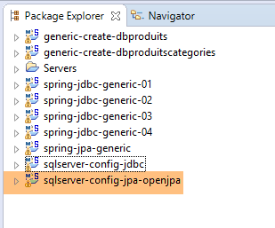 | 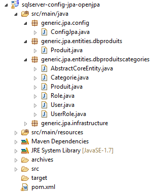 |
Das Projekt [sqlserver-config-jpa-openjpa] konfiguriert die [JPA]-Schicht der Testarchitektur:
 |
Das Projekt entspricht dem Konfigurationsprojekt [mysql-config-jpa-openjpa] für die OpenJpa-JPA-Schicht des MySQL-DBMS (siehe Abschnitt 8.3). Tatsächlich verwenden beide DBMS die Annotation [@GeneratedValue(strategy = GenerationType.IDENTITY)] zur Generierung von Primärschlüsseln. Es sind zwei Änderungen vorzunehmen. Diese befinden sich in der Definition des [jpaVendorAdapter]-Beans in der [ConfigJpa]-Klasse:
// the provider JPA
@Bean
public JpaVendorAdapter jpaVendorAdapter() {
OpenJpaVendorAdapter openJpaVendorAdapter = new OpenJpaVendorAdapter();
openJpaVendorAdapter.setShowSql(false);
openJpaVendorAdapter.setDatabase(Database.SQL_SERVER);
openJpaVendorAdapter.setGenerateDdl(true);
return openJpaVendorAdapter;
}
- Zeile 6: Wir teilen der JPA-Implementierung mit, dass sie mit einer SQL Server-Datenbank arbeiten wird. Die JPA-Implementierung übernimmt dann sowohl die proprietären Datentypen als auch die proprietäre SQL dieses DBMS.
Die zweite Änderung betrifft die JPA-Entitäten, die mit den Tabellen [PRODUCTS] und [PRODUCTS2] verknüpft sind:
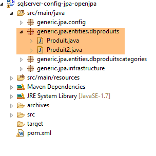 |
Die Entität [Product] ist mit der Tabelle [PRODUCTS] verknüpft, ohne dass Primärschlüssel automatisch generiert werden (keine Annotation [@GeneratedValue]):
@Entity(name = "Produit1")
@Table(name = ConfigJdbc.TAB_PRODUITS)
public class Produit {
// fields
@Id
@Column(name = ConfigJdbc.TAB_PRODUITS_ID)
private Long id;
Die Entität [Product2] ist mit der Tabelle [PRODUCTS2] verknüpft, wobei Primärschlüssel automatisch generiert werden:
@Entity(name = "Produit2")
@Table(name = ConfigJdbc.TAB_PRODUITS2)
public class Produit2 {
// fields
@Id
@GeneratedValue(strategy = GenerationType.IDENTITY)
@Column(name = ConfigJdbc.TAB_PRODUITS_ID)
private Long id;
Außerdem muss das Projekt, das die Datenbank [dbproduits] generiert, so geändert werden, dass es angibt, dass sich nun zwei JPA-Entitäten in der Datenbank befinden:
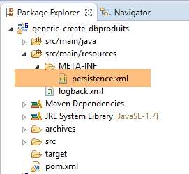 |
Die Datei [persistence.xml] ändert sich wie folgt:
<?xml version="1.0" encoding="UTF-8"?>
<persistence version="1.0" xmlns="http://java.sun.com/xml/ns/persistence" xmlns:xsi="http://www.w3.org/2001/XMLSchema-instance"
xsi:schemaLocation="http://java.sun.com/xml/ns/persistence http://java.sun.com/xml/ns/persistence/persistence_1_0.xsd">
<persistence-unit name="generic-jpa-entities-dbproduits" transaction-type="RESOURCE_LOCAL">
<!-- entities JPA -->
<class>generic.jpa.entities.dbproduits.Produit</class>
<class>generic.jpa.entities.dbproduits.Produit2</class>
<exclude-unlisted-classes>true</exclude-unlisted-classes>
</persistence-unit>
</persistence>
Das Projekt [generic-create-dbproduits] ist für alle DBMS gleich. Die zuvor untersuchte JPA-Schicht enthielt die Entität [Product2] nicht. Man könnte sich daher fragen, ob der Verweis auf eine nicht vorhandene JPA-Entität bei diesen DBMS zum Scheitern des Projekts führt. Tests zeigen, dass dies nicht der Fall ist.
Nach diesen Änderungen sollte die Ausführung der Konfiguration [spring-jpa-generic-JUnitTestDao-openjpa] erfolgreich sein.
 |  |
13.4. Konfiguration der Hibernate-JPA-Schicht
 | 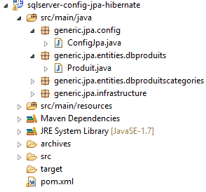 |
Hinweis: Drücken Sie [Alt-F5], um alle Maven-Projekte neu zu generieren.
Das Projekt [sqlserver-config-jpa-hibernate] entspricht dem Projekt [mysql-config-jpa-hibernate] (Abschnitt 6.3) und weist dieselben Änderungen auf, die zur Portierung des Projekts [mysql-config-jpa-openjpa] auf das Projekt [sqlserver-config-jpa-openjpa] (Abschnitt 8.3) verwendet wurden.
Sobald diese Änderungen vorgenommen wurden, sollte die Ausführung der Konfiguration [spring-jpa-generic-JUnitTestDao-hibernate-eclipselink] erfolgreich sein.
13.5. Konfigurieren der EclipseLink-JPA-Schicht
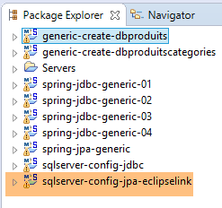 | 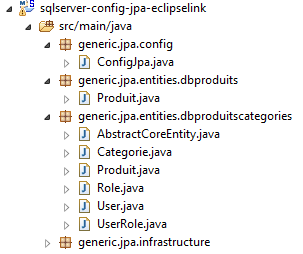 |
Hinweis: Drücken Sie [Alt-F5], um alle Maven-Projekte neu zu generieren.
Das Projekt [sqlserver-config-jpa-eclipselink] entspricht dem Projekt [mysql-config-jpa-eclipselink] (Abschnitt 7.3) und weist dieselben Anpassungen auf, die bei der Portierung des Projekts [mysql-config-jpa-openjpa] auf das Projekt [sqlserver-config-jpa-openjpa] (Abschnitt 8.3) vorgenommen wurden.
Mit diesen Änderungen sollte die Ausführung der Konfiguration [spring-jpa-generic-JUnitTestDao-hibernate-eclipselink] erfolgreich sein.